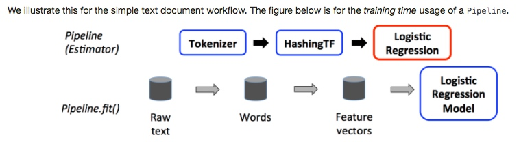

https://tracholar.github.io/wiki/#tools
pyspark RDD
http://www.jianshu.com/p/4cd22eda363f
首先spark有两个关于机器学习的库ml和mllib.
mllib
mllib是面向RDD的.目前官网上处于维护模式。
The MLlib RDD-based API is now in maintenance mode。The primary Machine Learning API for Spark is now the DataFrame-based API in the spark.ml package.
ml
ml的API是面向dataset的(dataframe是dataset的一个特例)。dataset的底端是RDD， dataset对RDD进行了优化，是更进一步的抽象。
关于两者的相似对比可以参看官方文档
http://spark.apache.org/docs/latest/ml-guide.html
http://spark.apachecn.org/docs/cn/2.2.0/ml-guide.html(中文)
参考资料：https://www.ibm.com/developerworks/cn/opensource/os-cn-spark-practice5/index.html
一个 Pipeline 在结构上会包含一个或多个 PipelineStage，每一个 PipelineStage 都会完成一个任务，如数据集处理转化，模型训练，参数设置或数据预测等，这样的 PipelineStage 在 ML 里按照处理问题类型的不同都有相应的定义和实现。首先需要了解几个主要的概念
transformer
transform()方法Estimator
Parameter
pipeline 就像是一个工作流

mllib支持读取libsvm格式的数据：
label index1:value1 index2:value2 ..
实验全量的
http://yq01-tianqi-spark-yarn00.yq01.baidu.com:8388/proxy/application_1511855101950_42074/
前期构造词频矩阵：
examples/src/main/python/sql/basic.py输入数据：每行是切分好的term
spark = SparkSession.builder.appName("CountVectorizerExample").getOrCreate()
sc = spark.sparkContext
# $example on$
# Input data: Each row is a bag of words with a ID.
lines = sc.textFile("/user/ubs/kce/zhenzhen/spark/test_data/corpus_title2")
parts = lines.map(lambda l: l.split('#')) # convert all the term to a list
termRDD = parts.map(lambda p: Row(tid=p[0], words=p[1].split(' ')))
df = spark.createDataFrame(termRDD)
# fit a CountVectorizerModel from the corpus.
cv = CountVectorizer(inputCol="words", outputCol="features")
#, vocabSize=3, minDF=2.0)
model = cv.fit(df)
result = model.transform(df)
~/zhenzhen/spark_study/spark/examples/src/main/python/mllib $ pyspark zzz_tf_idf_example.py
# pyspark这个默认是启动的集群任务，之前测试的本地数据会出错，脚本中需把输入目录改成集群路径
~/zhenzhen/spark_study $ pyspark kmeans.py > log.test
http://www.zengyilun.com/spark-similarity/
上述所有步骤(tfidf，降维,聚类)合并在一起
# pyspark这个默认是启动的集群任务，之前测试的本地数据会出错，脚本中需把输入目录改成集群路径
~/zhenzhen/spark_study $ pyspark tfidf_kmeans.py > log.test
这个测试ok，但是中心点都是0，应该是数据问题
Spark是以RDD概念为中心运行的。RDD是一个容错的、可以被并行操作的元素集合。创建一个RDD有两个方法：在你的驱动程序中并行化一个已经存在的集合；从外部存储系统中引用一个数据集，这个存储系统可以是一个共享文件系统，比如HDFS、HBase或任意提供了Hadoop输入格式的数据来源。
(1) RDD的创建—— 并行化集合
并行化集合是通过在驱动程序中一个现有的迭代器或集合上调用SparkContext的parallelize方法建立的。为了创建一个能够并行操作的分布数据集，集合中的元素都会被拷贝
data = [1, 2, 3, 4, 5]
distData = sc.parallelize(data) #建立了分布数据集，可以进行一些并行的操作
并行化中可以自己设置数据集划分成分片的数量(一般是spark集群自动进行设定的)，比如sc.parallelize(data, 10)
(2)外部数据集
PySpark可以通过Hadoop支持的外部数据源（包括本地文件系统、HDFS、 Cassandra、HBase、亚马逊S3等等）建立分布数据集。Spark支持文本文件、序列文件以及其他任何Hadoop输入格式文件.
（1）通过文本文件创建RDD要使用SparkContext的textfile方法
from pyspark import SparkContext
if __name__ == "__main__":
sc = SparkContext(appName="zzz_KMeans")
#调用文件的url/本地文件路径等
lines = sc.textFile("/user/ubs/kce/zhenzhen/algorithm_analysis/query_classifier/quanliang/3C/term_matrix/")
注意
(3)其他
除了文本文件之外，pyspark还支持一些其他的数据格式
数据库
RDD的操作，整体上分为两类： 转化操作和启动操作。
转化操作
惰性求值的，就是说它们并不会立刻真的计算出结果。相反，它们仅仅是记录下了转换操作的操作对象（比如：一个文件）。只有当一个启动操作被执行，要向驱动程序返回结果时，转化操作才会真的开始计算启动操作
常见的转化操作：
| 转化操作 | 作用 |
|---|---|
| map(func) | 返回一个新的分布数据集，由原数据集元素经func处理后的结果组成 |
| filter(func) | 返回一个新的数据集，由传给func返回True的原数据集元素组成 |
| flatMap(func) | 与map类似，但是每个传入元素可能有0或多个返回值，func可以返回一个序列而不是一个值 |
| mapParitions(func) | 类似map，但是RDD的每个分片都会分开独立运行，所以func的参数和返回值必须都是迭代器 |
| mapParitionsWithIndex(func) | 类似mapParitions，但是func有两个参数，第一个是分片的序号，第二个是迭代器。返回值还是迭代器 |
| sample(withReplacement, fraction, seed) | 使用提供的随机数种子取样，然后替换或不替换 |
| union(otherDataset) | 返回新的数据集，包括原数据集和参数数据集的所有元素 |
| intersection(otherDataset) | 返回新数据集，是两个集的交集 |
| distinct([numTasks]) | 返回新的集，包括原集中的不重复元素 |
| groupByKey([numTasks]) | 当用于键值对RDD时返回(键，值迭代器)对的数据集 |
| aggregateByKey(zeroValue)(seqOp, combOp, [numTasks]) | 用于键值对RDD时返回（K，U）对集，对每一个Key的value进行聚集计算sortByKey([ascending], [numTasks])用于键值对RDD时会返回RDD按键的顺序排序，升降序由第一个参数决定 |
| join(otherDataset, [numTasks]) | 用于键值对(K, V)和(K, W)RDD时返回(K, (V, W))对RDD |
| cogroup(otherDataset, [numTasks]) | 用于两个键值对RDD时返回(K, (V迭代器， W迭代器))RDD |
| cartesian(otherDataset) | 用于T和U类型RDD时返回(T, U)对类型键值对RDD |
| pipe(command, [envVars]) | 通过shell命令管道处理每个RDD分片 |
| coalesce(numPartitions) | 把RDD的分片数量降低到参数大小 |
| repartition(numPartitions) | 重新打乱RDD中元素顺序并重新分片，数量由参数决定 |
| repartitionAndSortWithinPartitions(partitioner) | 按照参数给定的分片器重新分片，同时每个分片内部按照键排序 |
常见的启动操作：
| 启动操作 | 作用 |
|---|---|
| reduce(func) | 使用func进行聚集计算,func的参数是两个，返回值一个，两次func运行应当是完全解耦的，这样才能正确地并行运算 |
| collect() | 向驱动程序返回数据集的元素组成的数组 |
| count() | 返回数据集元素的数量 |
| first() | 返回数据集的第一个元素 |
| take(n) | 返回前n个元素组成的数组 |
| takeSample(withReplacement, num, [seed]) | 返回一个由原数据集中任意num个元素的suzuki，并且替换之 |
| takeOrder(n, [ordering]) | 返回排序后的前n个元素 |
| saveAsTextFile(path) | 将数据集的元素写成文本文件 |
| saveAsSequenceFile(path) | 将数据集的元素写成序列文件，这个API只能用于Java和Scala程序 |
| saveAsObjectFile(path) | 将数据集的元素使用Java的序列化特性写到文件中，这个API只能用于Java和Scala程序 |
| countByCount() | 只能用于键值对RDD，返回一个(K, int) hashmap，返回每个key的出现次数 |
| foreach(func) | 对数据集的每个元素执行func, 通常用于完成一些带有副作用的函数，比如更新累加器（见下文）或与外部存储交互等 |
RDD持久化
主要用的两个方法persist和cache
Spark的一个重要功能就是在将数据集持久化（或缓存）到内存中以便在多个操作中重复使用。当我们持久化一个RDD是，每一个节点将这个RDD的每一个分片计算并保存到内存中以便在下次对这个数据集（或者这个数据集衍生的数据集）的计算中可以复用。这使得接下来的计算过程速度能够加快（经常能加快超过十倍的速度）.
每一个持久化的RDD都有一个可变的存储级别，这个级别使得用户可以改变RDD持久化的储存位置.
Spark会自动监视每个节点的缓存使用同时使用LRU算法丢弃旧数据分片。如果你想手动删除某个RDD而不是等待它被自动删除，调用RDD.unpersist()方法。
共享变量
有时候需要重新设置Rdd的分区数量：
有两种方法是可以重设Rdd的分区：分别是 coalesce()方法和repartition()
spark中的数据是分布式的
rdd.saveAsTextFile()
【参考资料】